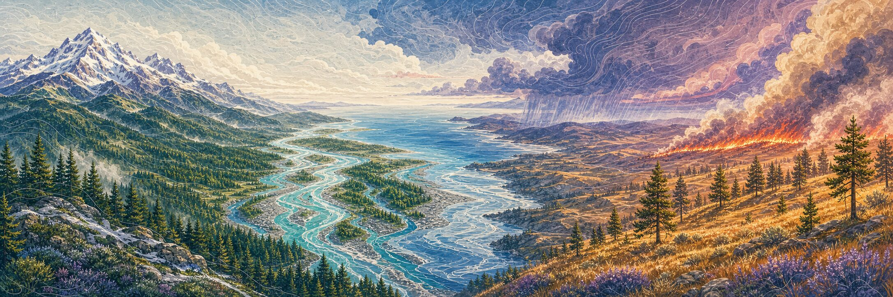
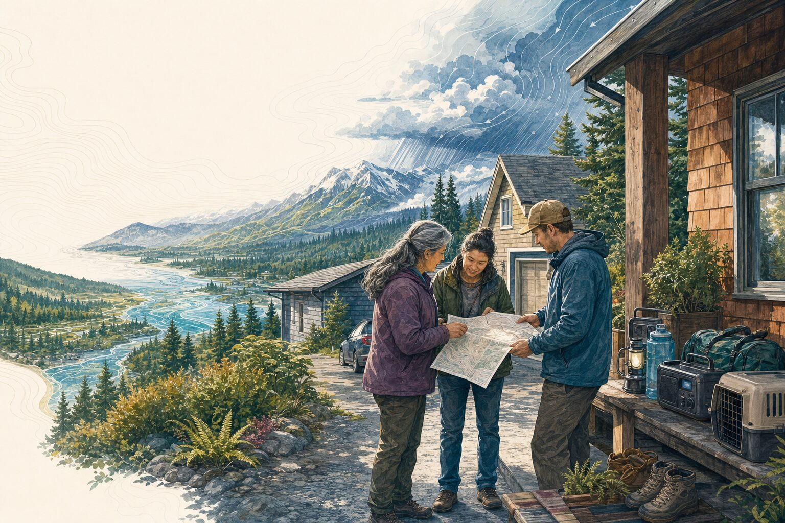

Why this exists
A guide for the place we actually live.
Most preparedness resources are either frightening or boring: official checklists with no sense of place, survivalist forums that assume you want to live in a bunker. I built this site because I wanted something that treated me like an adult—honest about the risks, specific to where I live, and genuinely useful.
Cascadia.me began in 2016, after Kathryn Schulz's Pulitzer Prize-winning article about the Cascadia Subduction Zone pushed my young Washington family to make its first serious kit. I was not an expert; I was a parent looking for a better answer than fear. That ordinary beginning still governs the work: real geology, real weather, official public information, and candor about what a regional guide cannot know.
One place, many forces
The systems meet here.
This is Cascadia: ocean plates meet a continent beneath the coast. Winter moisture rises over steep terrain, falls as rain and snow, and returns through creeks and rivers. Summer heat dries grass and forest fuels. Wind moves weather, smoke, and sometimes fire through valleys, passes, islands, and cities. Roads, power lines, ferries, farms, water systems, and homes are laid across all of it.
The same storm can load ice onto trees, close a pass, interrupt power, and raise a river. The same earthquake can change roads, communication, drinking water, and the coast within minutes. A wildfire decision may begin with a weather warning or a neighbor who needs more time—well before a flame is visible from home.

That is why Cascadia.me does not treat hazards as isolated categories. The chapters are separate because their immediate decisions differ. The place, the household, and the work of recovery remain connected.
Cascadia does not stop at a state or provincial line. This site follows the connected coast, mountains, watersheds, and communities from northern California through Oregon and Washington into southern British Columbia. Each guide—and every live layer—names the places it actually covers.
Official sources and original fiction
Sometimes you need a source. Sometimes you need a story.
Signals
Find who speaks for a place.
Cascadia Signals helps you find official alert programs, emergency agencies, transportation information, hazard sources, and support resources. It is a directory, not a report of current conditions. For official trail, terrain, access, and offline maps, continue to Field Maps.
Find official sourcesField Stories
Read through the difficult moment.
Field Stories are original fiction about preparedness, crisis, care, and recovery. Every story is labeled as fiction and followed by factual source notes.
Choose a storyThe household workbook
The plan has to fit the life you actually have.
Most plans begin at a kitchen table or on a porch, with a familiar map opened between people who know the same roads. The questions are ordinary: Who may need a ride? Which medicine must stay cold? Who can collect a child or an animal if someone is away? Where will you meet if the bridge, ferry, pass, or cell network is unavailable?
Preparedness does not require an ideal household, a garage full of equipment, or equal time and money. It begins by naming what cannot safely wait and deciding who can help. A neighbor may have a vehicle but need help with a pet. One household may have stored water; another may have a radio, a warm room, language skills, or a way to check on someone living alone.
